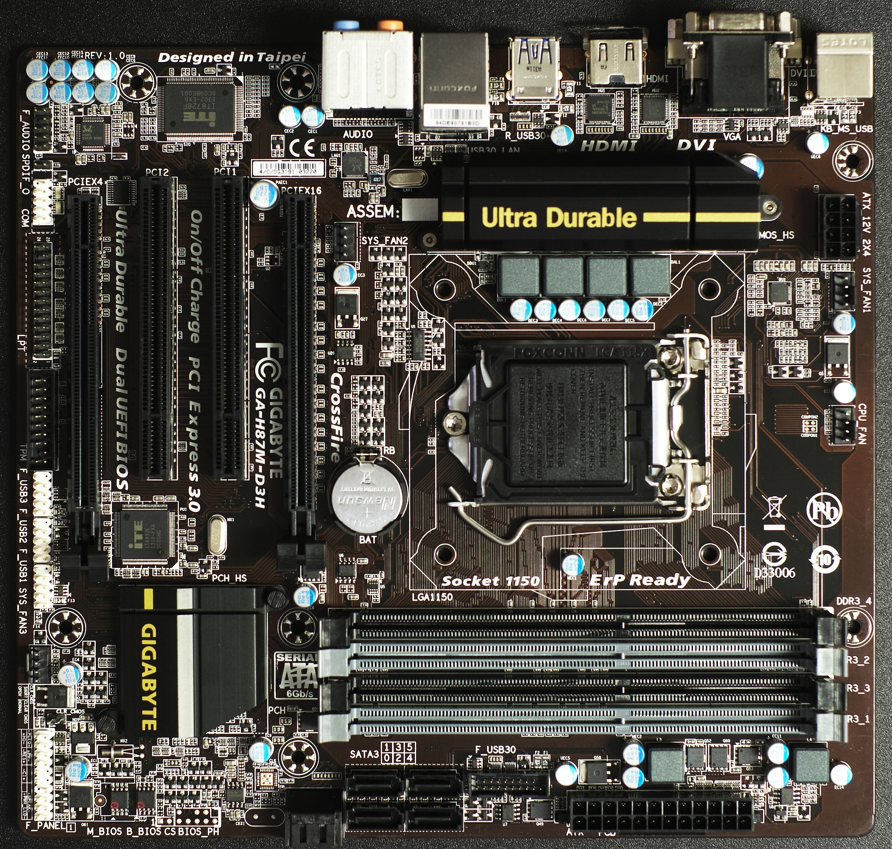

Процесор (CPU)
Виконує програмні інструкції та керує роботою всієї системи. Важливі параметри: кількість ядер, тактова частота та сокет, який має збігатися з материнською платою.
Гайд зі збірки ПК
Кожен компонент відповідає за свою частину роботи комп'ютера. Нижче наведено основні з них.
Виконує програмні інструкції та керує роботою всієї системи. Важливі параметри: кількість ядер, тактова частота та сокет, який має збігатися з материнською платою.
З'єднує всі компоненти між собою. Визначає, який процесор і яку пам'ять можна встановити, а також скільки буде роз'ємів для накопичувачів і відеокарт.

Тимчасово зберігає дані запущених програм. Для сучасних задач зазвичай обирають два модулі в двоканальному режимі.
Обробляє зображення, тому критична для ігор та роботи з графікою. Деякі процесори мають вбудоване графічне ядро, і тоді окрема відеокарта не обов'язкова.
SSD працює значно швидше за HDD, тому на нього встановлюють систему та програми. HDD доречний для великих архівів. Найшвидші SSD у форматі M.2 NVMe підключаються безпосередньо до материнської плати.
Перетворює напругу з розетки на напруги, потрібні компонентам. Його потужність обирають із запасом, а якість впливає на надійність усього ПК.
Тримає всі деталі разом та забезпечує потік повітря. Має відповідати розміру материнської плати та вмістити відеокарту й кулер.
Процесорний кулер відводить тепло від CPU, корпусні вентилятори створюють повітряний потік. Між процесором і кулером наноситься термопаста, якщо вона не нанесена на кулер заздалегідь.